なかモンREC ヘルプ
対応バージョン: v26.9.1 / Last updated: 2026-08-30
なかモンREC (NakamonREC) は、ドラクエウォーク「なかまモンスターの対戦」の戦績を
画面キャプチャから自動記録するアプリです。このページではインストールから
初期設定・戦績の見方・トラブル対処までを説明します。
アプリのインストール
お使いの端末に合わせて、以下のストアからインストールしてください (無料)。
1. 初期設定: 画面の校正 (最初に1度だけ)
なかモンREC はキャプチャした画面を画像認識して対戦を記録します。そのため最初に、
お使いの端末での画面の見え方をアプリに覚えさせる「校正」が必要です。
校正は最初の1度だけ行えば OK です (機種変更や画面解像度の変更をしたときは再校正してください)。
1-1. 校正用のスクリーンショットを準備する
アプリを使う前にドラクエウォークで対戦を1回行い、次の4枚のスクリーンショットを撮っておきます。
- ① パーティ選択画面 — パーティ1〜3のいずれかを選択した状態 (水色のフォーカス枠が当たっていること)
- ② VS画面 (対戦開始時に両パーティが表示される画面)
- ③ 勝利画面 (「勝利!!」の表示)
- ④ 敗北画面 (「ざんねん…」の表示)
iPhone SE (第3世代) をお使いの方へ:
v26.8.2 以降で対応しています。①のスクリーンショットは「パーティ1か2を選択した状態」で
「一覧をスクロールせずに」撮影してください (パーティ3の位置は自動で補完されます)。
条件を満たさない画像は校正時にメッセージでお知らせします。
1-2. アプリで校正する
- メイン画面のカメラアイコンから校正メニューを開く
- 「パーティ選択画面」を選択
- 「画像をインポート」で ① の画像を設定 → 「校正を開始」→「自動校正」→ 緑枠の位置を確認して「この位置で決定」
- ② VS画面・③ 勝利画面・④ 敗北画面についても同様に繰り返す
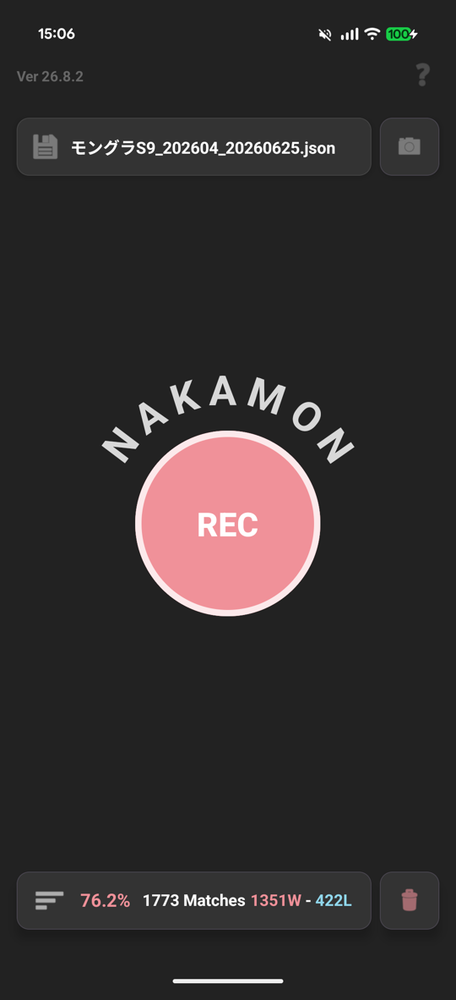
メイン画面 (右上のカメラアイコン)
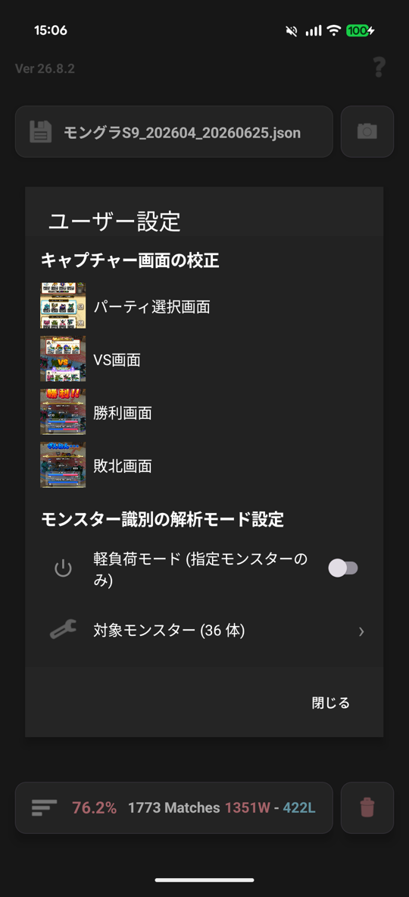
校正メニュー (4画面を順に校正)
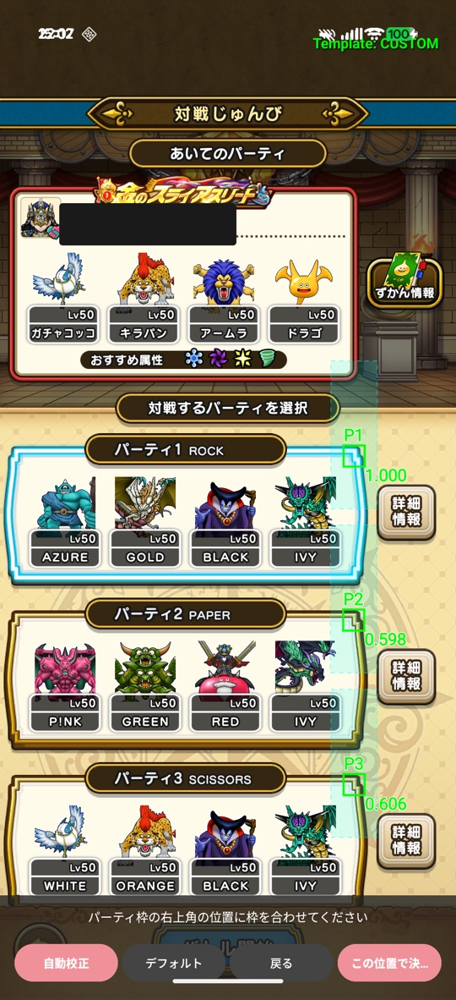
パーティ選択画面の校正 (緑枠が各パーティの右上角に付けば成功)
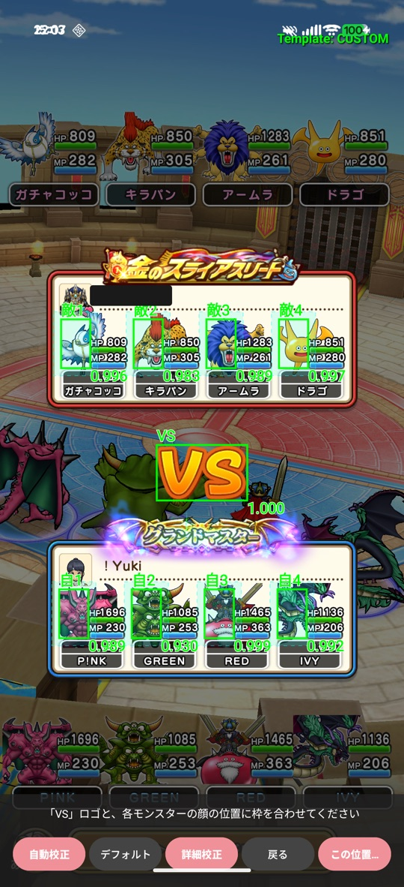
VS画面の校正 (緑枠がモンスターと VS ロゴに付けば成功)
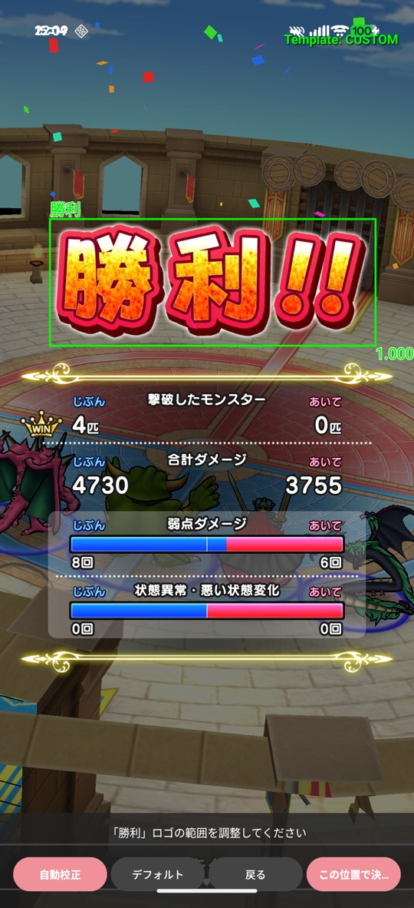
勝利画面の校正
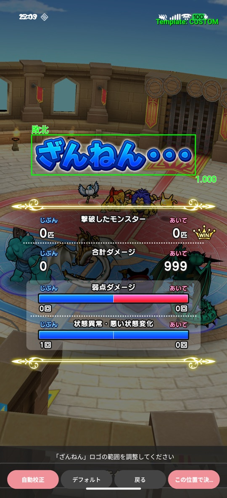
敗北画面の校正
VS画面は「詳細校正」でも校正できます。8体のモンスターを手動で指定する方式で、
自動校正がうまくいかない端末でも確実に校正できます。
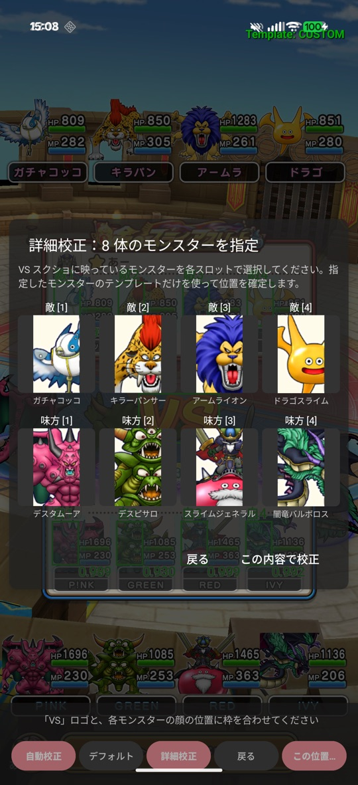
詳細校正 (8体のモンスターを指定)
2. 対戦を記録する
Android の場合
- メイン画面の中央にある「REC」ボタンを押す
- ドラクエウォークの画面を選択する (Android 14 以降の場合)
- 戦闘を開始する — 校正が成功していれば、VS画面で戦闘開始の通知が出ます
iPhone の場合
- メイン画面の中央にある「REC」ボタンを押す
- 「ブロードキャストを開始」を押す
- ドラクエウォークの画面に切り替えて、戦闘を開始する
iPhone をお使いの方へ:
戦闘開始/終了の通知は表示されません。また、REC の開始時と停止時には通知音が鳴ります。
OS の制約によるもので、この音をオフにすることはできません。
対戦が終わると自動で戦績に記録されます。対戦後の解析には10秒前後かかるため、
連戦しない場合は解析が終わってから REC を停止してください
(解析が終わる前に停止するとモンスターが識別されません)。
3. 戦績を見る (編集・フィルタ・集計)
メイン画面下部の戦績バーから戦績画面を開けます。対戦ごとの勝敗 (WIN/LOSE)・
使用パーティ (P1〜P3)・両パーティのモンスター・日時が一覧で確認できます。
レコードの編集 — 画面下部のボタンが編集モード (ペンのアイコン) のとき
- 任意のレコードを長押しする
- 勝敗、選択パーティ、使用モンスターの修正が可能
- その他、レコードの追加/削除、マッチングスコアの確認が可能
レコードのフィルタ — 画面下部のボタンがフィルタモードのとき
- レコード左端の WIN/LOSE を押すと勝敗でフィルタ
- レコード中の任意のモンスターを押すと対象モンスターでフィルタ (含む条件)
- 同じモンスターをもう一度押すと「そのモンスターを含まない」除外条件に切り替え (v26.9.1〜)。フィルタ欄では赤い斜線付きで表示されます
- 画面上部のフィルタ欄のフィルタ条件/CLEAR ボタンで解除
集計 — 画面下部右側の虫眼鏡アイコン
- パーティ集計: パーティごとの使用率と勝率。最新の P1〜3 以外に、過去に使っていたパーティの戦績も確認できます
- モンスター集計 (モンスタータブ): 敵モンスターの出現率と勝率。「グラフ表示」に切り替えると24H単位の推移が見られ、環境の変化を把握できます
- モンスター集計 (パーティタブ): モンスターの組み合わせ (敵パーティ) 単位の出現率と勝率
- グランプリ集計 (ベータ): 大会 (モングラ) 中のレーティング推移。詳しくは特設: グランプリ集計をご覧ください
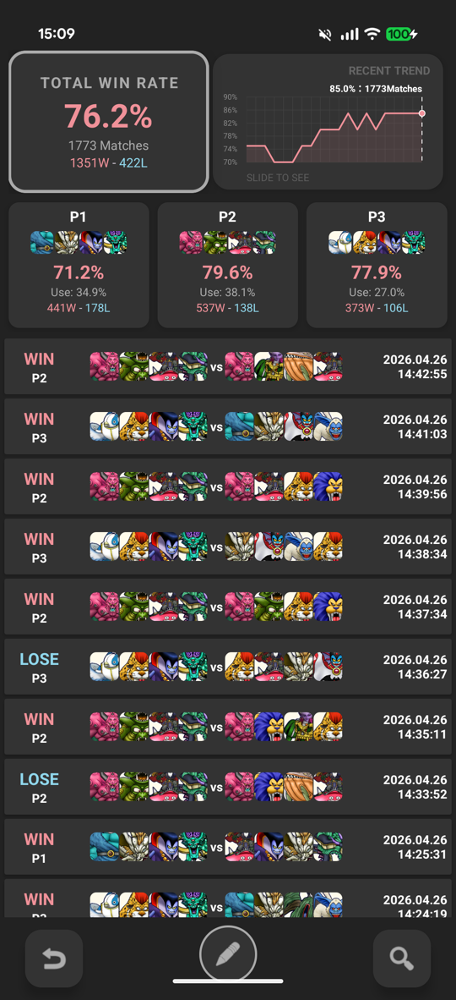
戦績画面
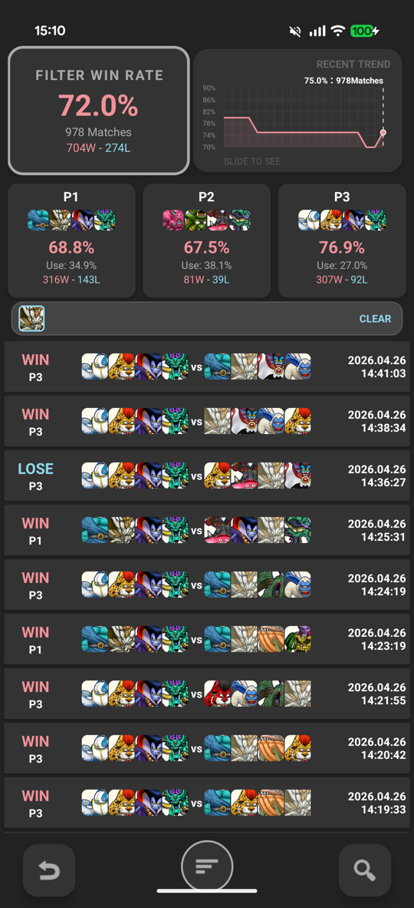
フィルタ適用中 (上部の CLEAR で解除)
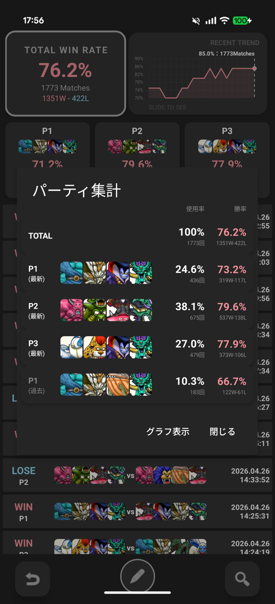
パーティ集計
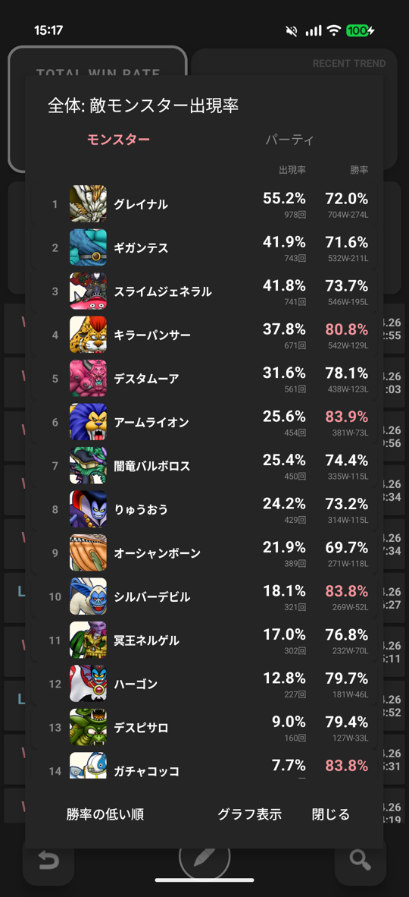
モンスター集計 (モンスタータブ)
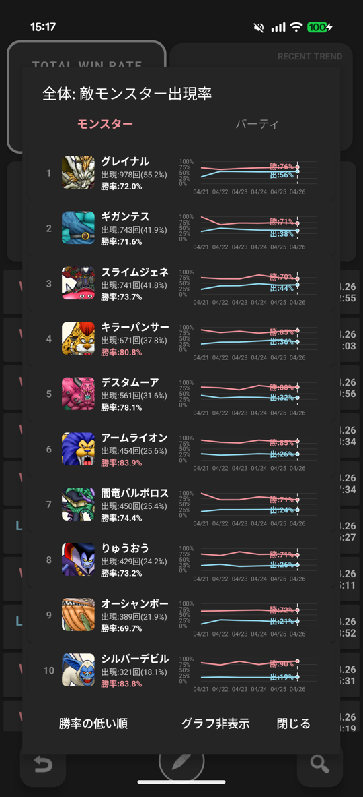
グラフ表示 (24H単位の推移)
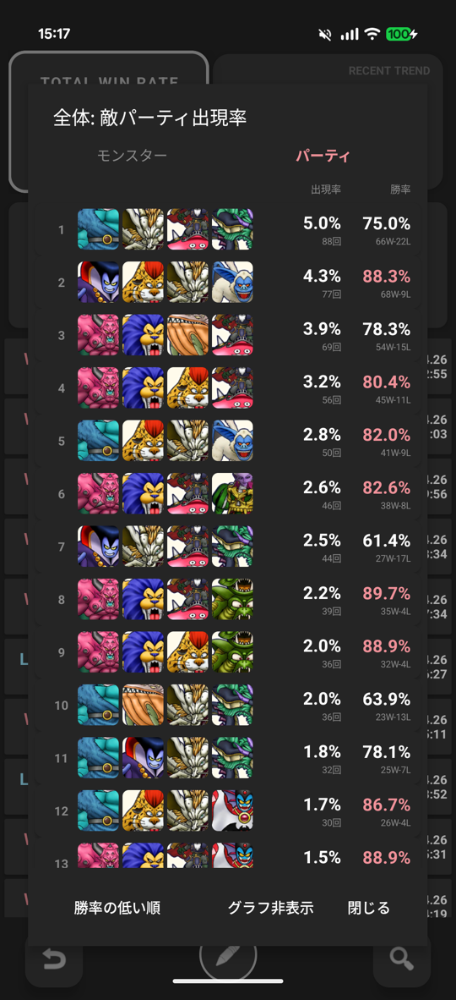
モンスター集計 (パーティタブ)
4. 自動記録されず困ったときは
-
画面校正を行っているか確認する
とくにパーティ選択画面は、P1〜3 のいずれかにフォーカスを当てた画像で校正できているか確認してください。
-
スマホの解像度を確認する
スマホによっては省エネモードとして低解像度に設定できたり、逆に高解像度に設定できたりしますが、
本アプリは解像度 1080×2364 で開発しています。お手数ですが上記解像度に近い設定で
お使いいただくと自動記録の精度があがります (設定変更後は再校正してください)。
-
モンスター識別の解析モードを確認する
古めのスマホをお使いの方で処理負荷が高いと感じた方は「軽負荷モード」をお試しください。
通常モードでは全モンスターをマッチング対象としていますが、軽負荷モードでは
マッチング対象を絞ることで動作を軽くできます (校正メニュー内の「モンスター識別の解析モード設定」)。
-
解析時間を確認する
解析は10秒前後かかります。解析が終わる前に REC を停止するとモンスターが識別されません。
解析時間はデバッグメニューの「直近の解析ログ」から確認できます。
-
それでも記録されない場合
お問い合わせください。その際、マッチングスコア詳細画面
(戦績画面の編集モードでレコードを長押し → マッチングスコアの確認)
を共有いただけると原因究明に役立ちます。
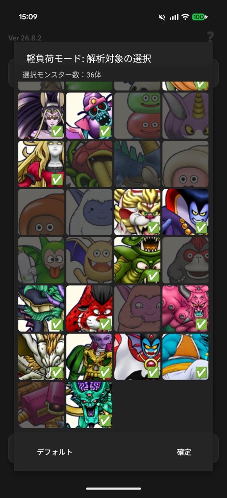
軽負荷モード: 解析対象のモンスターを選択
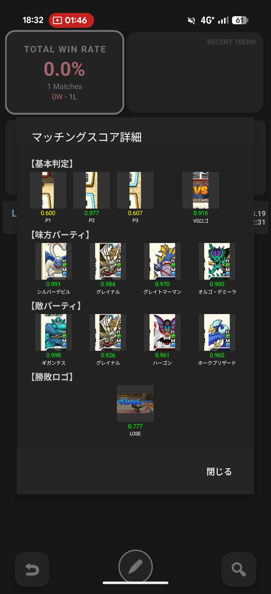
マッチングスコア詳細画面 (お問い合わせ時に共有いただきたい画面)
5. 上級者向け機能
メイン画面左上のバージョン番号 (Ver xx.x.x) を長押しすると、デバッグメニューが開きます。
- 直近の解析ログ: 直近2戦ぶんの解析の流れ (パーティ検知 → VS検知 → モンスター識別のスコア → 勝敗検知) と解析時間を確認できます。自動記録がうまくいかないときの原因確認に便利です
- アプリのアップデートを確認: ストアに新しいバージョンがあるか手動で確認できます
- マッチング閾値を調整: VS / WIN / LOSE 検知の閾値 (0.4〜0.8) を調整できます。値を上げると誤検知が減りますが、本来の検知も逃しやすくなります。通常はデフォルトのままで問題ありません
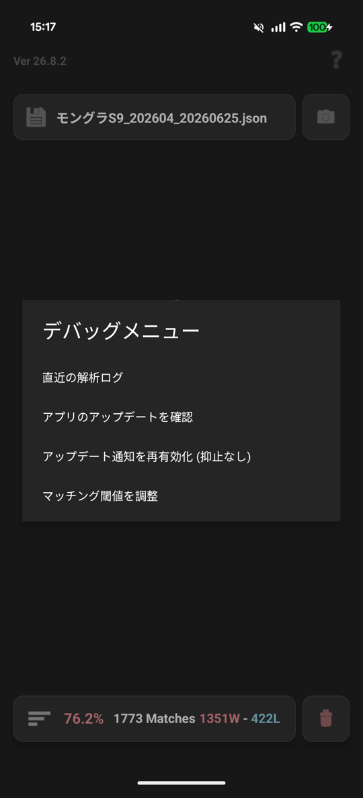
デバッグメニュー (バージョン番号を長押し)
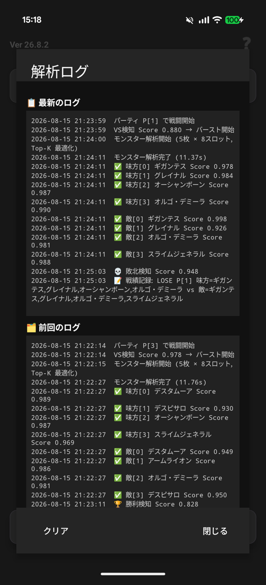
直近の解析ログ
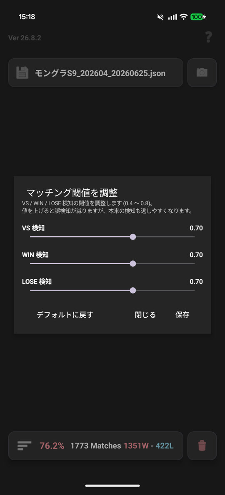
マッチング閾値の調整
特設: グランプリ集計 (ベータ) — 大会のレーティングを自動記録
v26.9.1 の新機能です。なかまモンスターグランプリ (大会) 中のレーティングスコアとボーダーを自動で記録し
(グランドマスター中はボーダーは記録されません)、推移をグラフで振り返ることができます。
ランク帯 (マスター3〜グランドマスター) も自動判定してエンブレムで表示します。
使い方 (非グランプリ期間の動作確認手順)
- 大会用の VS 画面のスクリーンショットを撮り、「VS画面」を再校正する
— 校正画面の右上に GRAND PRIX MODE と表示されたら準備完了です
(大会の VS 画面は通常戦と絵柄が異なるため、大会のたびに再校正してください)
- いつも通り REC して対戦する — Android は画面共有のダイアログで「画面全体を共有」に
切り替えてください (動作確認では過去のスクリーンショットを写真アプリ等で表示するため、
初期値の「1個のアプリを共有」では画面が映りません)
- 対戦が終わったら、勝敗表示の画面をタップしてレーティングの表示を出す
— この画面からスコアを読み取ります (勝敗表示から20秒以内)
- Android では記録できると「GP記録 xxxx.x」の通知が出ます (iPhone は OS の制約で通知が出ませんが、記録はされています)
- 集計メニュー (虫眼鏡) の「グランプリ集計」で、レーティング推移のグラフとレコード一覧を確認できます
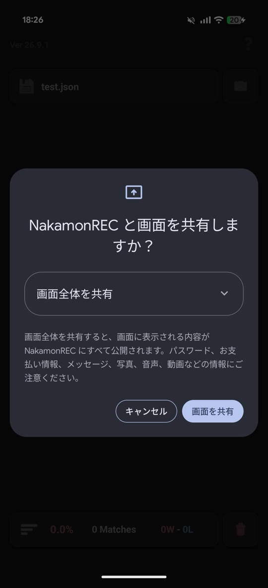
手順2: 動作確認では「画面全体を共有」に切り替える (Android 15 の例)
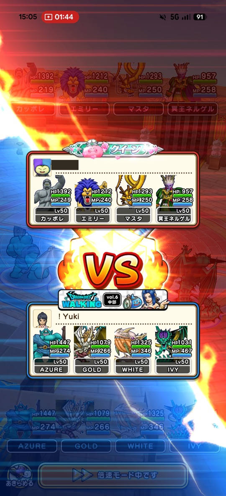
手順1で撮る「大会用 VS 画面」の例
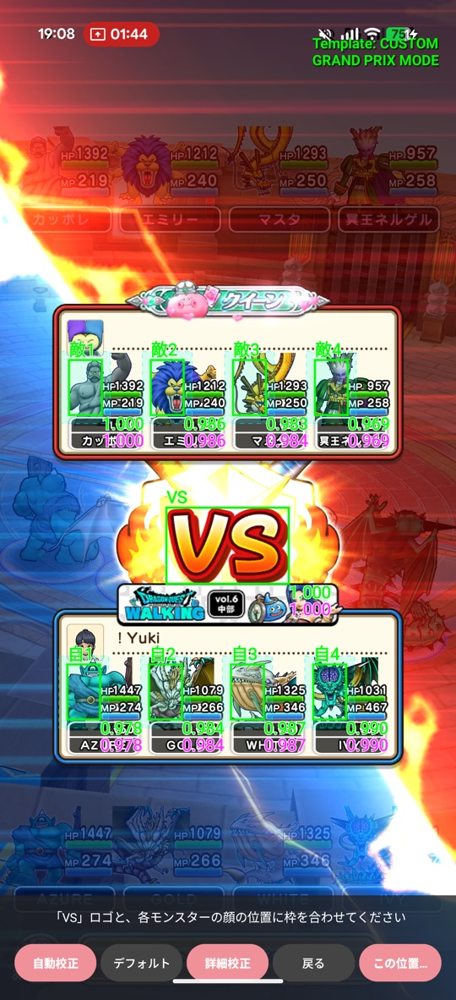
校正に成功すると右上に GRAND PRIX MODE と表示
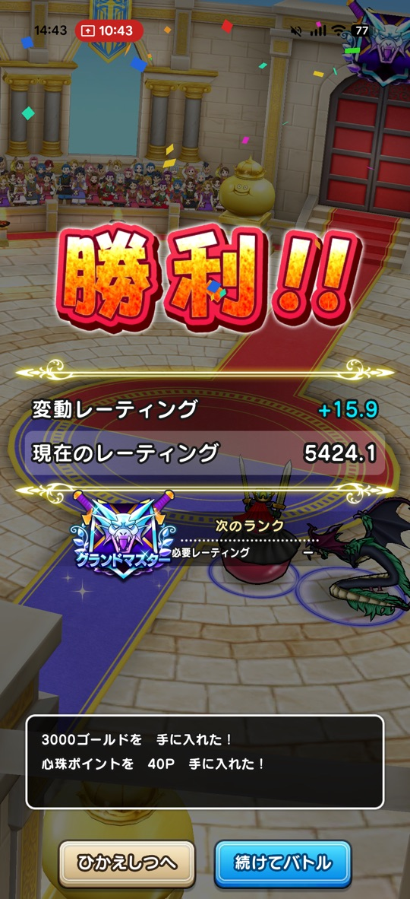
手順3でタップして出す「レーティング表示」の例
グランプリ集計画面でできること
- グラフ表示: 自分のレーティング (赤) とボーダー (青) の推移。点をタップすると上部にその戦の詳細 (ランク帯・レーティング・ボーダー・日時) が表示されます。レコードが50戦を超えると「直近50戦」ズーム+横スクロールに切り替えられます
- テキスト表示: 1戦ごとの一覧 (日時・ランク帯・戦闘数・レーティング・変動・ボーダー)。レコードをタップすると編集・削除・追加ができます — 読み取りに失敗した戦も手動で補完できます
知っておいてほしいこと:
- 本機能はベータ版です。スコアの読み取りに自信が持てない場合、なかモンREC は誤った値を書き込まず「記録しない」動作をします。抜けた戦はテキスト表示から手動追加してください
- 記録ファイルは大会ごとに分けるのがおすすめです (グランプリ集計は読込中のファイルの記録を1本の推移として表示します)
- グランプリモード中は通常戦 (フレンドマッチング等) が記録されないことがあります。大会が終わったら通常の VS 画面で再校正するとグランプリモードが解除されます
- 現時点では、グランプリ記録は CSV エクスポート/インポートの対象外です (今後のバージョンで対応予定)。CSV で戦績を移行してもグランプリ記録は引き継がれない点にご注意ください